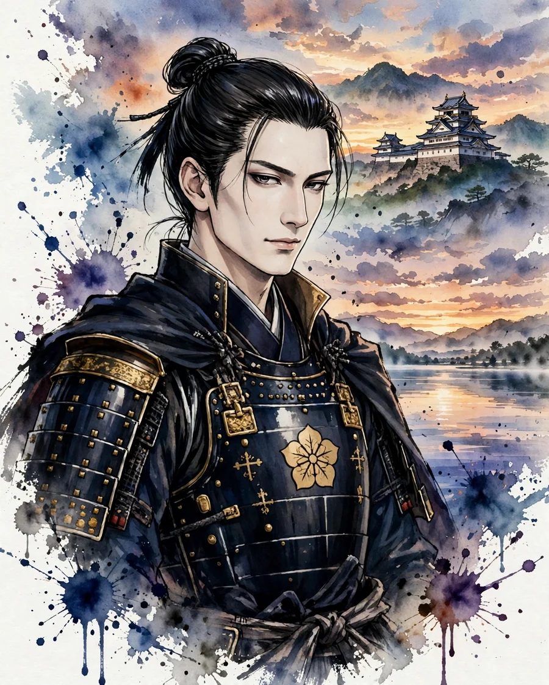

Ishida Mitsunari
石田三成 (いしだ みつなり)

| Years | 1560–1600 |
|---|---|
| House | Ishida clan |
| Region | Kinki (Kansai) |
| Era | Azuchi-Momoyama period |
Overview
A native of Omi, he served Toyotomi Hideyoshi as a commissioner (bugyo) in charge of land surveys and administration. After Hideyoshi's death, he raised an army in opposition to Tokugawa Ieyasu, one of the Five Elders (Go-tairo), was defeated at the Battle of Sekigahara, and was executed.
Life
Born in Ishida Village, Sakata District, Omi Province, he is said to have entered the service of Toyotomi Hideyoshi while young. Displaying talent for the practical work of land surveys, tax collection, and transport, he supported the logistics of the Kyushu campaign, and at the attack on Oshi Castle he directed the flooding attack (which did not result in the castle's fall). In the invasions of Korea he attended to the administration of the occupied areas and the practical work of peace negotiations, and after returning home he bore responsibility for running the Toyotomi government as one of the Five Commissioners (Go-bugyo). After Hideyoshi's death, with the death of Maeda Toshiie as the turning point, his confrontation with Tokugawa Ieyasu deepened, and in 1600 he raised an army. At the Battle of Sekigahara, however, partly because of defections such as that of Kobayakawa Hideaki, he was defeated and was executed in Kyoto.
In battle
While Mitsunari is highly regarded as a man of practical affairs, his record as a battle commander is limited. The flooding attack on Oshi Castle did not succeed, partly because the embankment collapsed, and at Sekigahara, judgments before the main battle concerning the handling of Ogaki Castle and the position of the headquarters affected the result. Nevertheless, the scale of the diplomacy and mobilization by which he united the Western Army daimyo across the country was great, and it is also known that the outcome of the battle depended heavily on defections on the day and on the intelligence contest.
Arms and equipment
Few records survive of Mitsunari's martial skill. He was a commander whose main battlefield was the practical administration of the Osaka castle town and coordination by letter, and on the field of battle he was supported by retainers such as Shima Sakon. As for Sakon, reliable records of him are scarce, and most of his exploits come from war chronicles. The popular verse, 'Two things were too much for Mitsunari: Sakon of the island and the castle of Sawayama,' is also a later tale.
Character and records
Both images of him are handed down: that of a loyal retainer who valued 'righteousness' (gi), and that of a cold-hearted bureaucrat who brought down his political enemies. He is a figure with many highly story-like episodes, such as the letter of Naoe Kanetsugu regarded as a challenge to Ieyasu (said to have been coordinated with Mitsunari) and the tale of his friendship with Otani Yoshitsugu. In recent years, through research on his letters and other materials, his high practical ability has been reappraised.
In literature
sekigahara, tokugawa, taikoki
Sekigahara is an epic novel structured around the confrontation between Mitsunari and Ieyasu. In Tokugawa Ieyasu and Shinsho Taikoki as well, Mitsunari's figure bearing the practical administration of the Toyotomi government is depicted.
Castles connected with Ishida Mitsunari
Recommended books on the age of the warlords
Castle Guide
Samurai Castles: History / Architecture / Visitors' Guides
Hundreds of color photographs and close-up detail on Japan's most important surviving samurai castles — their history, design and military features, with guidance for visitors. The best single companion for castle sightseeing.
View at Barnes & NobleCheck the price at Barnes & Noble
Book links on this page go to the retailers' product pages. Prices and availability are shown on the retailer's page.